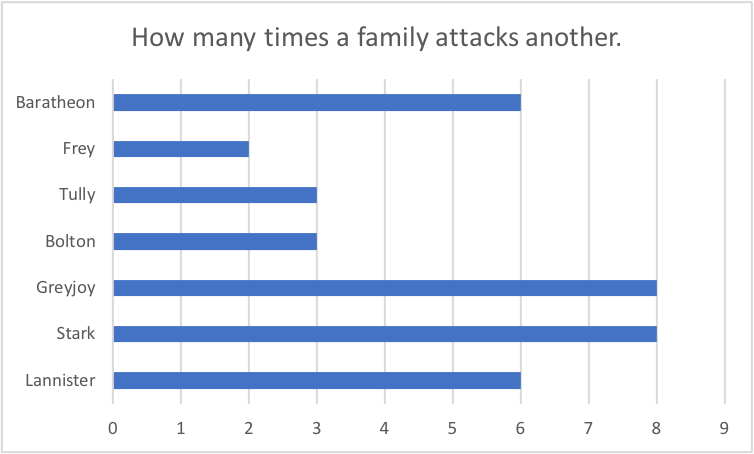
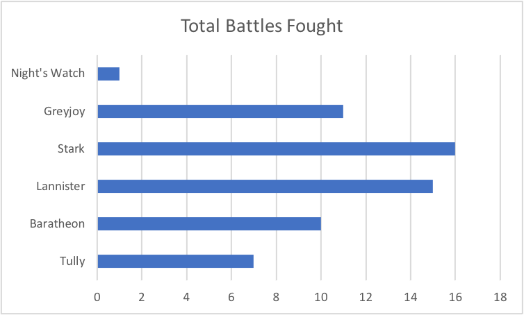
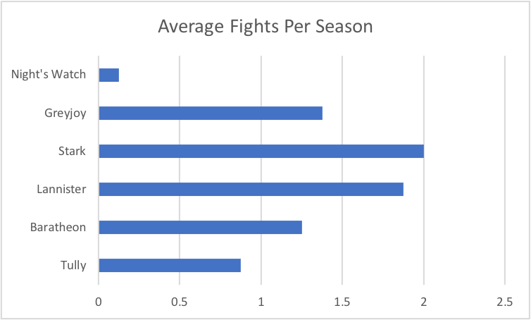

In the Game of Thrones, the Starks fight more than any other family.
Game of Thrones is known for its dramatic fighting and battles on a massive scale. While the Lannisters are known for being combative, it is actually the Stark family that has been involved in most battles. Over eight seasons, the Starks have fought a total of 16 times. This is twice a season on average, meaning that war with the Starks is inevitable.

The dataset that I used is a Game of Thrones dataset from Kaggle as well as some extra research from The Game of Thrones Wiki and
Time's Battle Ranking to complete my analysis. The picture above is a graph that I created in Excel to show the total of number of battles that a family has participated in. Suprisingly the Starks have the top spot, beating out the angry Lannisters by 1. This ranking includes attackers and defenders to sum up the total number.
Stark Battles 0

For the first part, I talked about how the data included both attackers and defenders. This seemed too generalized and I expected the Lannisters to be the most aggressive family. This turns out to not be the case. The Lannisters do fight a lot, yes, but the Starks attack 25% more than the Lannisters do. Below, a graph shows how the Starks do indeed attack more than they defend while also seemingly being the main aggressor.

For a statistic, as mentioned above, I chose the rate at which a family will fight per season on average. Game of Thrones is an action-packed show and they put action into nearly every episode. The show is eight seasons long so I divided the total number of attacks and defends by the 8 seasons that exist. The picture of that graph is below.
The Lannisters, no matter how aggressive they are, do not fight as much as the mighty-ish Stark family. This is not indicative of how much they win or lose, but how many fights and battles they get into. The Starks start more battles than they don’t and this data has made it abundantly clear.